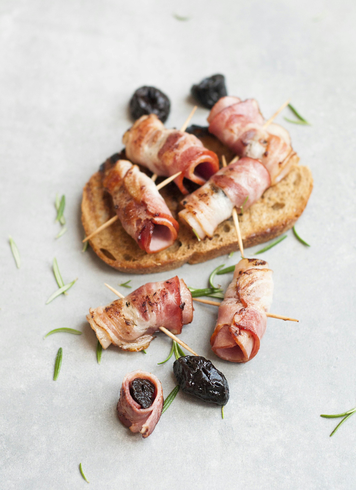
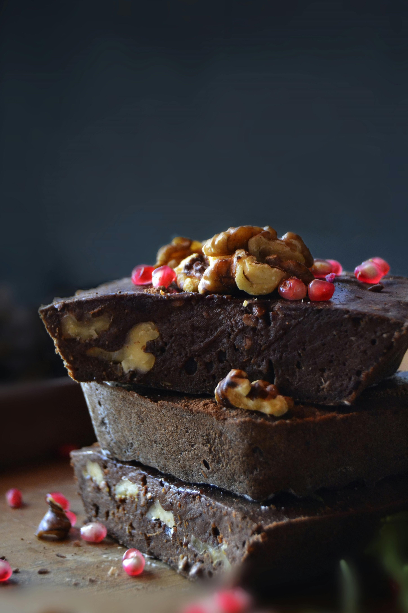
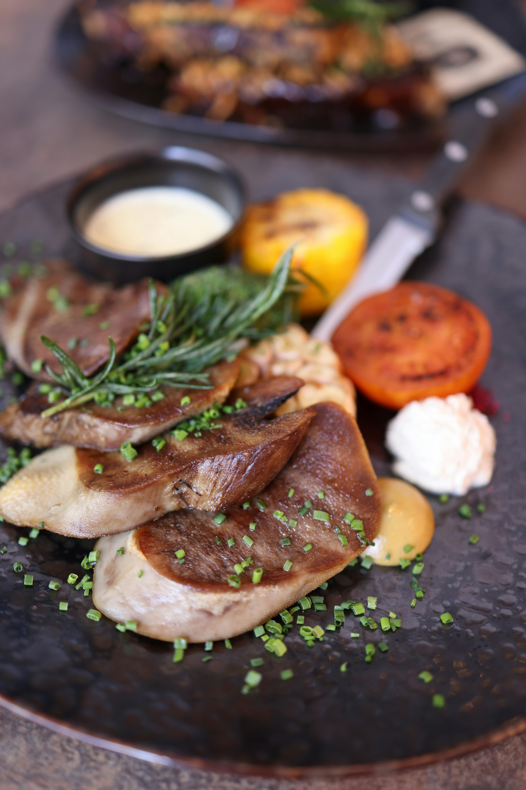
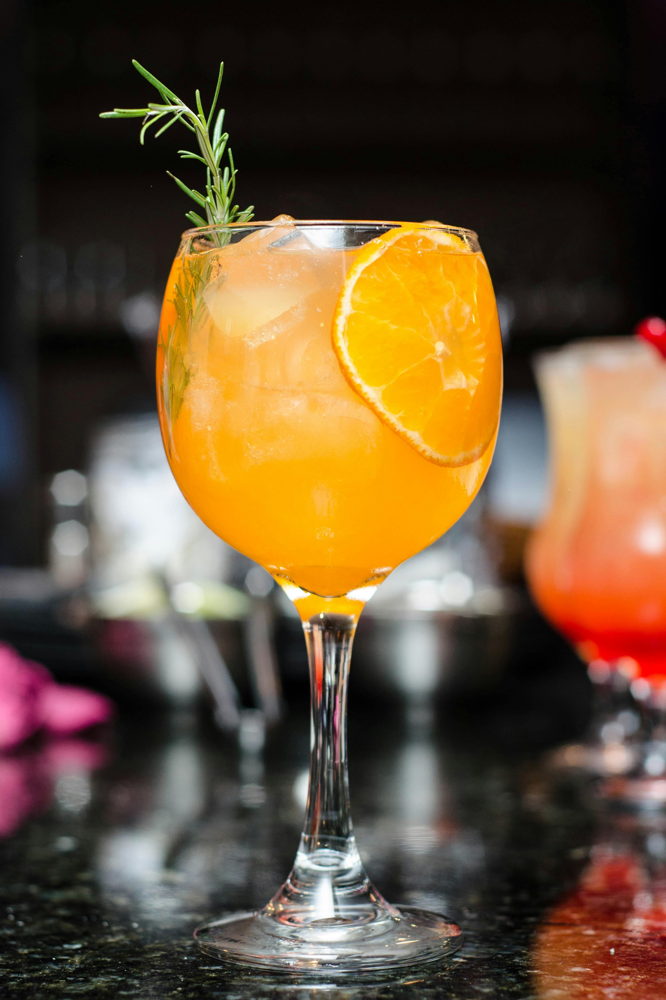

Appéritif
Plat Principal
Desserts
Boissons
La Brasserie Nouvelle et le Genève Servette ont une histoire en commun: celle du passage de Jacky Faton, ancien capitaine et figure emblématique de l'équipe de foot qui reprit en 1963 ce restaurant déjà bien implanté à côté du stade des Charmilles, dans le quartier du même nom. Il est d'ailleurs toujours possible de venir y regarder des matches en compagnie de passionnés. Depuis, la Brasserie Nouvelle a changé de main à quelque reprise avant de trouver ses propriétaires actuels, en septembre 2017. Le restaurant a toutefois conservé son caractère authentique et convivial, organisant volontiers des repas d'entreprise, de mariage, d'anniversaire ou encore des buffets. Le restaurant se compose d'une salle principale, d'une terrasse à l'avant du restaurant pour profiter des journées ensoleillées, et d'une charmante verrière pour être plus au calme. La clientèle variée se compose d'ancien habitués et d'une clientèle d'affaires à midi. Parmi les spécialités, la carte fait la part belle aux viandes, avec de succulentes entrecôtes de boeuf et de cheval en deux services, des pavés et des rumsteaks ainsi que des tartares de boeuf. Mais ce n'est pas tout! Vous apprécierez aussi les charbonades, pâtes, pizzas, poissons et fruits de mer ainsi que la fondue faite maison.